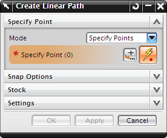
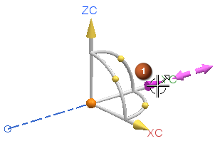
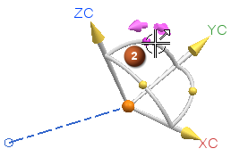

创建线性路径对话框
创建线性路径是用来构建单条线段的最主要的工具。 路径包括在其起点至终点之间的所有管线控制点(RCPs)、线段、拐角和折弯 。NX 在您创建线段时会自动添加装配约束。

您可以构建带或不带拐角和型材的路径，当您添加型材到您的路径中时，将会沿着路径扫掠路径轮廓线以形成实体模型。
模式
模式选项定义了线段的起点和终点。您将在这个课程中使用以下选项：
指定点
让您使用捕捉点选项、点对话框中的选项或者下拉菜单来选择起点和终点。
动态轴
在线段的活动的控制点上放置动态 CSYS，拖动平移手柄(1)来延伸线段在拖动方向上的长度。释放鼠标按钮则结束拖动。管线控制点被放置在新管线段终止点处。

要改变平移手柄的角度，拖动其中一个旋转手柄(2)。您后续所创建的任何线段将会沿着旋转后的手柄的方向。

要激活屏显输入框，选择平移或旋转手柄一次。然后在距离、角度或捕捉输入框中键输入正或负值以移动手柄。平移箭头所指的方向为正方向。
要反转平移手柄方向，在图形窗口中双击箭头符号。
平行于轴
创建投影到用户指定轴上的控制点。您可以使用对话框中的矢量下拉菜单来指定该轴。矢量默认为您选择的最后一个端口或圆弧的轴，或者如果您还没有选择端口或圆弧，则默认为上一个用户定义的轴。您也可以使用快速定向工具来定义矢量。
位于何处？
|
工具条 |
机械管线布置→创建线性路径 |
|
菜单 |
插入→管线布置路径→创建线性路径 |